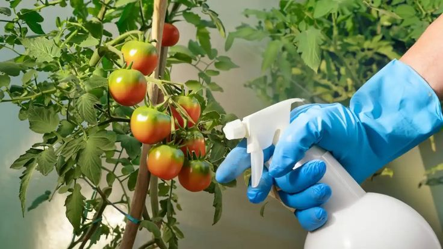
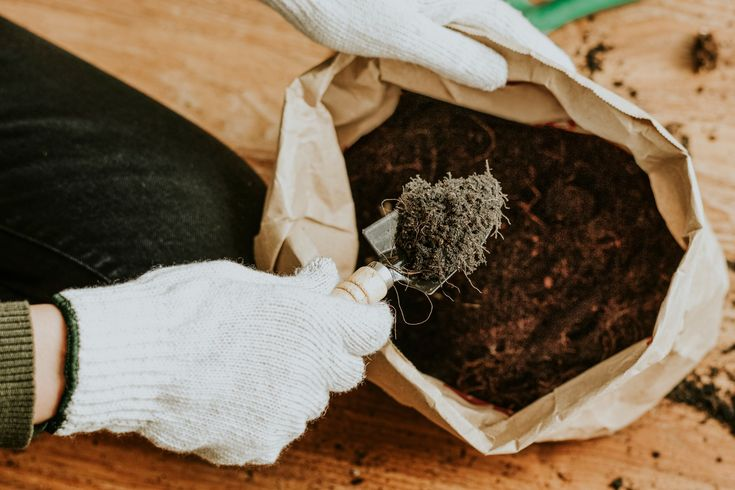
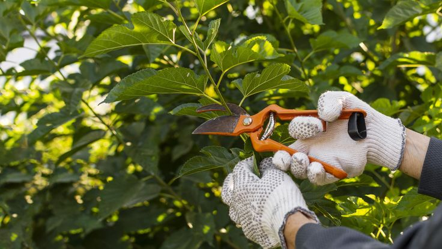

Cuidados básicos del huerto urbano
El cuidado correcto de un huerto urbano ayuda a mantener plantas saludables, mejorar la producción y evitar enfermedades o plagas. Cada cultivo necesita atención diferente dependiendo del clima, la estación y el tipo de planta.
1. Riego adecuado
El agua es fundamental para el desarrollo de las plantas. Sin embargo, un exceso de riego puede provocar pudrición de raíces, hongos y mal crecimiento.
Recomendaciones:
- Regar temprano por la mañana
- Evitar mojar excesivamente las hojas
- Comprobar humedad antes de volver a regar
- Usar recipientes con drenaje

2. Luz solar
La mayoría de las frutas y verduras necesitan varias horas de luz solar directa. Una mala iluminación provoca plantas débiles y menor producción.
| Tipo de planta | Horas de sol |
|---|---|
| Tomate | 6 a 8 horas |
| Lechuga | 4 a 5 horas |
| Pepino | 6 horas |
| Fresa | 5 a 6 horas |

3. Prevención de plagas
Las plagas pueden afectar hojas, raíces y frutos. Detectarlas a tiempo ayuda a evitar daños graves en el huerto.
Plagas comunes:
- Pulgones
- Hormigas
- Orugas
- Mosca blanca
Soluciones naturales:
- Ajo
- Funciona como repelente natural de insectos.
- Canela
- Ayuda a evitar hongos en la tierra.
- Jabón potásico
- Se utiliza contra pulgones y plagas pequeñas.

4. Abono y nutrientes
Las plantas necesitan nutrientes para crecer correctamente. El abono mejora la calidad del suelo y fortalece el cultivo.
Tipos de abono:
- Compost casero
- Humus de lombriz
- Cáscara de huevo triturada
- Restos vegetales

5. Poda y mantenimiento
La poda permite eliminar hojas secas o dañadas, mejorar la ventilación y estimular el crecimiento.
Beneficios:
- Evita enfermedades
- Mejora la circulación de aire
- Estimula nuevos brotes
- Mejora la producción
